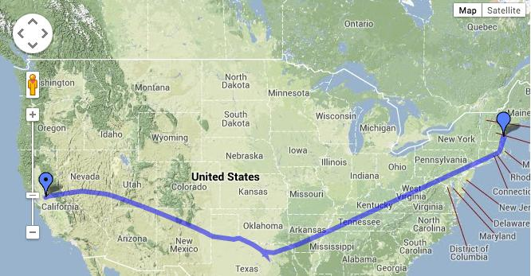

01.23.2014 06:03
Cross country flight
I just recently got to fly from West
Coast to East Coast (US that is). I always enjoy trying to capture
good pictures when I have access to a window. A few years back, I
always seemed to get people sitting next to me that claimed there
was no way to get good photos from a commercial flight. Thankfully
that has dropped off.
Images taken with an iPhone 4S. The color is never quite up to what I see with the eye and iPhoto's color tools are not good enough to do much of a fix.
The Sierras should be totally blanketed in snow by late January. This photo scares the heck out of me. California is in for a serious drought this year.
The Southern Snake Range / Great Basin National Park:
It's very sad to see hydrolic fracking pads all over the place. I only recently learned to look for. Ignore the water treatment on the right and look for the mostly bare earth rectangles. What are we doing to the lands that we have to live and grow food on and the aquafers that provide drinking water? Short term gain (for some) and long term disaster (and we don't even know what all trouble we are in for). See also: frack.skytruth.org
Images taken with an iPhone 4S. The color is never quite up to what I see with the eye and iPhoto's color tools are not good enough to do much of a fix.

The Sierras should be totally blanketed in snow by late January. This photo scares the heck out of me. California is in for a serious drought this year.
The Southern Snake Range / Great Basin National Park:
It's very sad to see hydrolic fracking pads all over the place. I only recently learned to look for. Ignore the water treatment on the right and look for the mostly bare earth rectangles. What are we doing to the lands that we have to live and grow food on and the aquafers that provide drinking water? Short term gain (for some) and long term disaster (and we don't even know what all trouble we are in for). See also: frack.skytruth.org
01.01.2014 09:30
Starting out 2014
I'm not as cool as people like
pydanny with posts like New Year's Meme
2013 that cover What's the Coolest Thing You Discovered This
Year, What New Programming Technique Did You Learn This Year, Which
Open Source Project Did You Contribute to the Most This Year? What
Did You Do, What Are the Top Three Things You Want to Learn Next
Year, and What is the Top Thing You Wish Someone Would Write Next
Year?
I just try to survive the onslaught. As a part of that I have some rituals. The most important one is that I keep a logfile where I track what I do every day in emacs org mode. I have a top level ('*') entry for each day and '**' entries for each general thing I work on during the day. For each day, I usually start with a '** todo :todo' section. I write in there all the things that I hope to get done that day in the form of a org todo list in the form of '- [ ] fix bug foo'. I'm always overly ambitious and rarely get them all done. In fact some of them require more than that day or are out and out not in the range of things I can get done. I have a 'todo' alias that greps the current year for all lines that start as '- [ ]' (or contain *+ TODO). I often get to the point in the day where I'm totally overloaded with the current task and just staring at the screen. That's a good time for a task swap. So I run my todo alias and look through the back log trying to pick off a few small things to keep me going until I'm ready to get back into the current fight. That list gets long as the year moves on.
The best part of the new year is that I make a new org mode file and get to start with nothing on the todo list. I then skim last year's list and pull forward only those things that still feel like they should be in my conciousness. Those rafted todos are still important, but they don't deserve to cloud my mind. They serve to document what I was trying to do, things I thought would be nice, etc. They also provide a pool of potential side projects for others. Google has the concept of the 20% side project and I sometimes get asked by people how they can help. If I need inspriration, I can look back through past years of todo items. As always, I have to thank Anne Wright for kicking me into the one log per year mode (and away from being dominated by un-grep-able paper log books) back in 2004 in MER mission control during a middle of the night image processing hack session with the Ames crew.
The other thing I do is to reset my shell logs. I log every command that I type on the command line on my work laptop and desktop (that returns successfully). That's about 50k commands each. It logs when, what git branch I was in, what was the current directory, and the command. Admittedly, this is pretty boring as it is dominated by ls, cd, egrep, find, locate, emacsclient, git status, git diff, and so forth. But, with that many commands, there are quite a few gems and I grep for every day. At the New Years, I move the current log from .shell.log to .shell.log.YEAR.
Top shell commands for 2013:
I just try to survive the onslaught. As a part of that I have some rituals. The most important one is that I keep a logfile where I track what I do every day in emacs org mode. I have a top level ('*') entry for each day and '**' entries for each general thing I work on during the day. For each day, I usually start with a '** todo :todo' section. I write in there all the things that I hope to get done that day in the form of a org todo list in the form of '- [ ] fix bug foo'. I'm always overly ambitious and rarely get them all done. In fact some of them require more than that day or are out and out not in the range of things I can get done. I have a 'todo' alias that greps the current year for all lines that start as '- [ ]' (or contain *+ TODO). I often get to the point in the day where I'm totally overloaded with the current task and just staring at the screen. That's a good time for a task swap. So I run my todo alias and look through the back log trying to pick off a few small things to keep me going until I'm ready to get back into the current fight. That list gets long as the year moves on.
The best part of the new year is that I make a new org mode file and get to start with nothing on the todo list. I then skim last year's list and pull forward only those things that still feel like they should be in my conciousness. Those rafted todos are still important, but they don't deserve to cloud my mind. They serve to document what I was trying to do, things I thought would be nice, etc. They also provide a pool of potential side projects for others. Google has the concept of the 20% side project and I sometimes get asked by people how they can help. If I need inspriration, I can look back through past years of todo items. As always, I have to thank Anne Wright for kicking me into the one log per year mode (and away from being dominated by un-grep-able paper log books) back in 2004 in MER mission control during a middle of the night image processing hack session with the Ames crew.
The other thing I do is to reset my shell logs. I log every command that I type on the command line on my work laptop and desktop (that returns successfully). That's about 50k commands each. It logs when, what git branch I was in, what was the current directory, and the command. Admittedly, this is pretty boring as it is dominated by ls, cd, egrep, find, locate, emacsclient, git status, git diff, and so forth. But, with that many commands, there are quite a few gems and I grep for every day. At the New Years, I move the current log from .shell.log to .shell.log.YEAR.
Top shell commands for 2013:
- ls 13289
- cd 9170
- git 5162
- grep 2349
- rm 2170
- find 1855
- less 1722
- fink 1312
- schwehr 1209 # Alias to ssh into my desktop
- ipython 1199
- mv 985
- open 953
- svn 949
- branch 848 # Alias to create a git branch
- ssh 795
- du 764
- make 720
- cp 713
- pwd 712
- ec 695
- mkdir 664
- e 637
- df 633
- echo 602
- scp 601
- gcutil 498
- gdalinfo 496
- cat 486
- tar 462
- bq 433
- gsutil 424
- fg 406
- python 406
- bg 406
- type 396
- sudo 394
#!/usr/bin/env python
import collections
import os
cnt = collections.Counter()
for line in open('cmds'):
cmd = os.path.split(line.strip())[1]
cnt[cmd] += 1
for cmd, num in cnt.most_common(40):
print '<li>' + cmd, str(num) + '</li>'